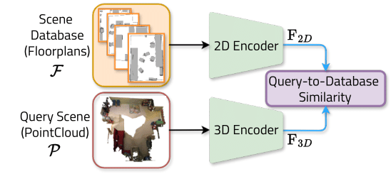

SGAligner++
Cross-Modal Language-Aided 3D Scene Graph Alignment
Binod Singh1* Sayan Deb Sarkar2* Iro Armeni2
1Technical University of Munich 2Stanford University
*Equal Contribution
TL;DR; SGAlinger++ is a 3D Scene Graph alignment framework across modalities using open-vocabulary cues and learned joint embeddings. It integrates geometry, semantics and spatial relationships from diverse input modalities.
Method

Given a scene and its instances represented across different modalities, namely, images, point clouds, cad meshes, text referrals and floorplans, the goal is to align all modalities within a shared embedding space. The Instance-Level Multimodal Interaction module learns a multi-modal embedding space for independent object instances. It captures modality interactions at the instance level within the context of a scene, using spatial pairwise relationships between the object instances. This is further enhanced by the Scene-Level Multimodal Interaction module, which jointly processes all instances to represent the scene with a single feature vector Fs. The instance and the scene modules provide a unified, modality-agnostic embedding space; however, it requires semantic instance information that is consistent across modalities during inference, which is challenging to obtain in practice. The Unified Dimensionality Encoders eliminate dependency on precise semantic instance information by learning to process each scene modality independently while interacting with the feature vector Fs, thus, progressively building a modality-agnostic embedding space.
Cross-Modal Inference Pipeline

During inference for scene retrieval, we use our unified dimensionality encoders. Given point cloud as the query modality that represents the scene, we extract a feature vector F3D in the shared embedding space. To find the most similar 2D floorplan from a database, we locate the closest feature F2D and retrieve the corresponding scene.
Qualitative Results


Citation
@inproceedings{
}